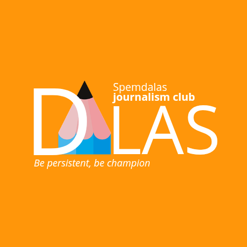
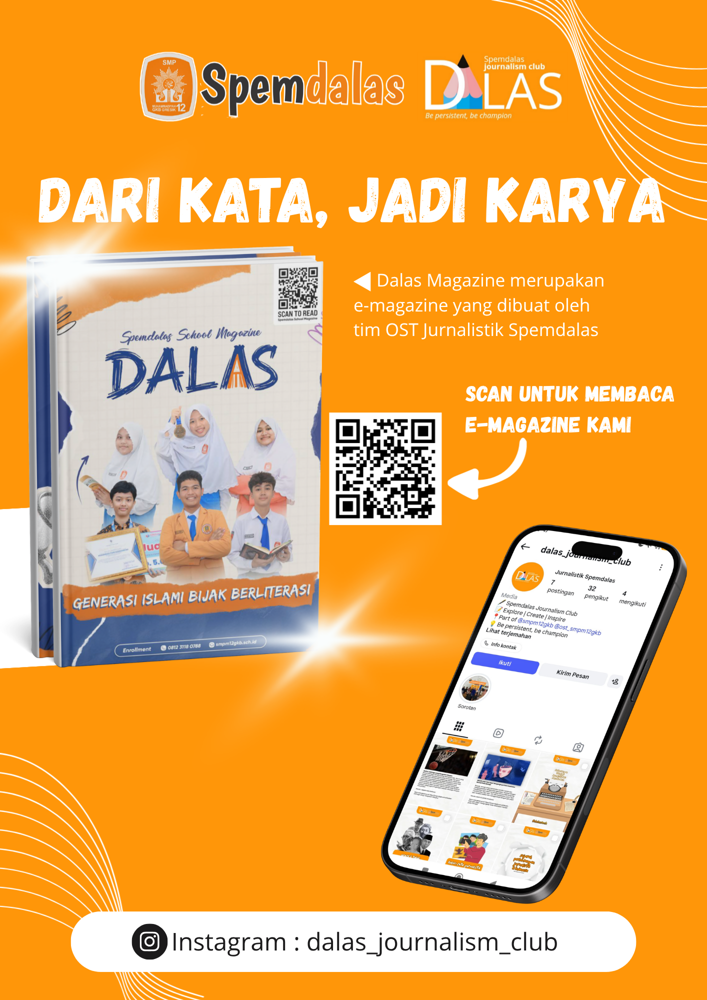
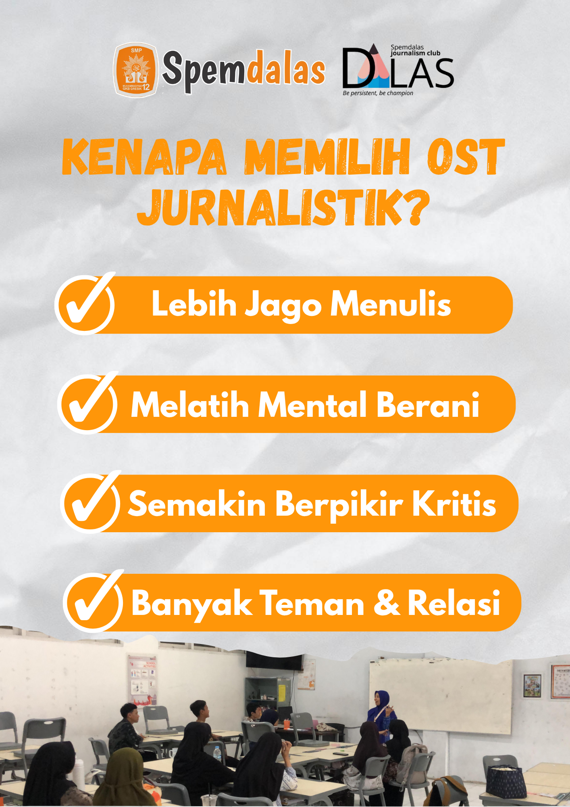

Artikel
Berita Sekolah
Peliputan agenda utama sekolah dengan struktur berita yang rapi dan faktual.

Ekstrakurikuler Sekolah
Media | Kreativitas | Informasi
Wadah siswa untuk belajar menulis, meliput, dan memproduksi konten jurnalistik sekolah secara modern dan profesional.
Belajar komunikasi, kepemimpinan, dan kreativitas dalam satu tempat yang aktif produksi konten sekolah.
Kenapa Harus Join?
Hasil liputan, dokumentasi visual, dan narasi yang kami produksi untuk menyampaikan cerita terbaik sekolah.
Artikel
Peliputan agenda utama sekolah dengan struktur berita yang rapi dan faktual.
Visual
Dokumentasi momen penting dalam format visual yang modern dan informatif.
Digital
Distribusi informasi cepat melalui desain dan copywriting yang relevan untuk siswa.
The Excellence of OST Jurnalistik
Terinspirasi dari layout sekolah modern: angka ditampilkan jelas agar progres tim jurnalistik mudah terlihat.
120+
Artikel dan berita sekolah terbit setiap tahun ajaran.
35+
Anggota aktif lintas divisi: reporter, editor, foto, dan desain.
18+
Liputan event sekolah, lomba, dan agenda kolaborasi tiap semester.
Kegiatan rutin yang dirancang agar anggota terus berkembang dari latihan sampai publikasi.
01
Belajar struktur berita, teknik wawancara, dan penulisan yang enak dibaca.
02
Praktik langsung peliputan event dengan pembagian peran reporter dan editor.
03
Hari publikasi karya di mading, web, dan media sosial untuk membangun konsistensi.
Postingan Instagram OST Jurnalistik Spemdalas untuk update kegiatan, karya terbaru, dan momen terbaik tim jurnalistik.
E-Magazine ini adalah karya OST Jurnalistik yang berisi liputan, opini, dan dokumentasi cerita sekolah dalam format digital interaktif.
Area ini disiapkan untuk flyer promosi berukuran A4. Gambar akan berganti otomatis setiap 4 detik.

